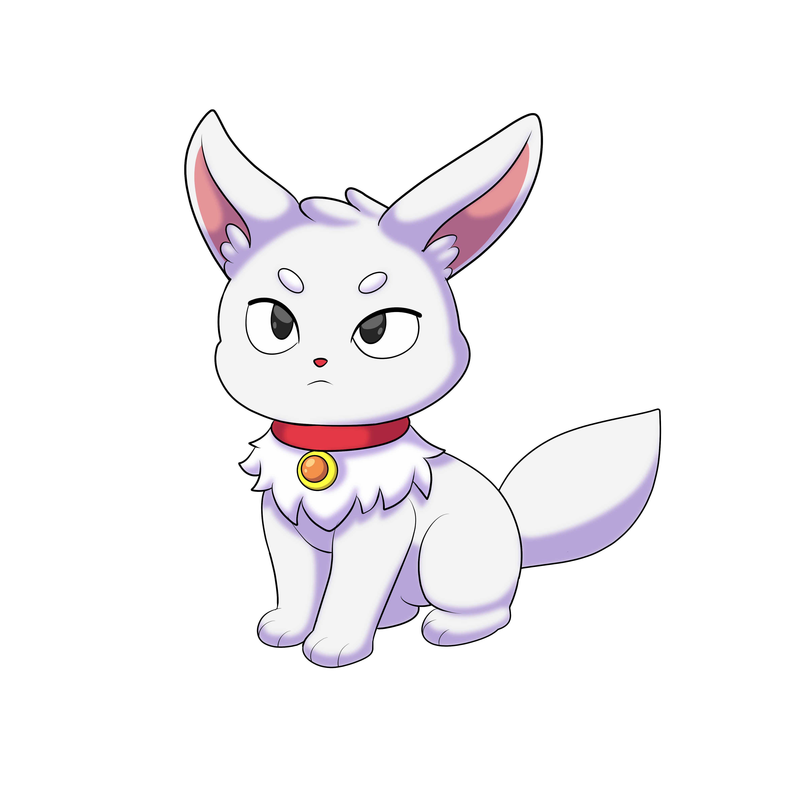
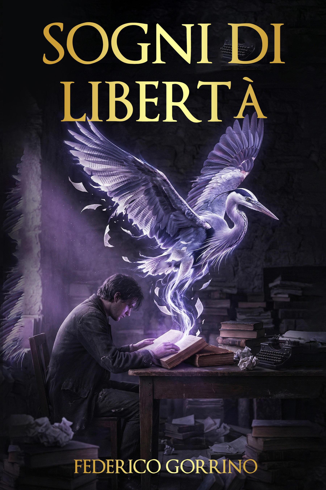
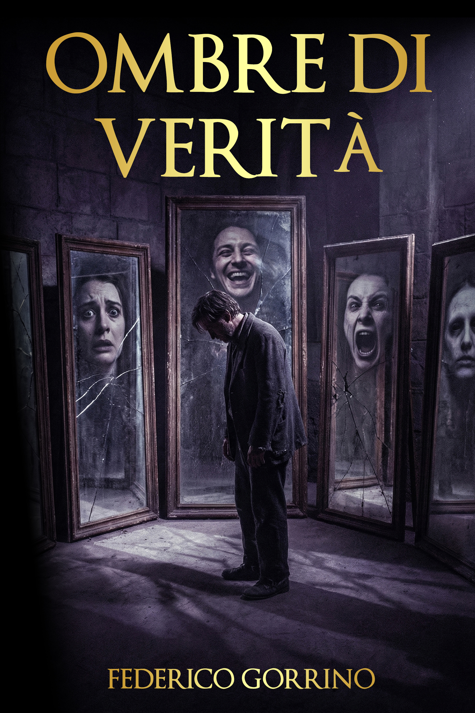
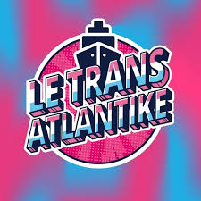

guardarsi, formarsi, scoprirsi.
Un universo di psicologia e narrazione: unisce introspezione, conoscenza e creatività per accompagnarti in un viaggio autentico.
Una Voce Dal Profondo è un progetto di divulgazione psicologica e narrazione che unisce scienza e creatività per accompagnarti alla scoperta del mondo interiore. Le collezioni tematiche — raccolte attorno agli otto pianeti del Sistema Solare — rendono vicini e comprensibili disturbi, neurodivergenze e sfumature dell'esperienza umana; la collana di libri Voci dal Profondo le trasforma in storie; Silen, la mascotte, guida il viaggio. Uno spazio senza giudizio in cui guardarsi, formarsi e scoprirsi.

Un viaggio intergalattico alla scoperta del proprio mondo interiore, tra psicologia e narrazione.
Silen è la specie ancestrale da cui discendono tutti i visitatori del nostro universo. Attraverso le sue diverse forme planetarie, ci accompagna a scoprire la bellezza e la complessità di ogni sfumatura dell'umano. Non offre risposte: cammina accanto a chi sceglie di guardarsi dentro, capirsi e accogliersi.Come i pianeti del Sistema Solare, ogni mente segue rotte uniche.
Esplora le collezioni dedicate alle diverse sfumature dell'esperienza umana: un percorso di divulgazione psicologica che unisce scienza e racconto.
Umore e Stress
Accendi il coraggio, governa la tempesta
Tocca per esplorare Burnout
Burnout Stress
Stress Distimia
Distimia Depressione
Depressione Disturbo Bipolare
Disturbo BipolareDifferenze nell'Apprendimento
Il pensiero segue rotte inedite
Tocca per esplorare Dislessia
Dislessia Disprassia
Disprassia Iperlessia
Iperlessia Discalculia
Discalculia Disgrafia
DisgrafiaDisturbi di Personalità
Nell'armonia del sé, il ritratto dell'anima
Tocca per esplorare Disturbo Evitante
Disturbo Evitante Disturbo Antisociale
Disturbo Antisociale Disturbo Paranoide
Disturbo Paranoide Disturbo Borderline
Disturbo Borderline Disturbo Narcisistico
Disturbo NarcisisticoCervello e Percezione
Radicati nel reale, esplora l'infinito
Tocca per esplorare Arto Fantasma
Arto Fantasma Ipertimesia
Ipertimesia Sinestesia
Sinestesia Sindrome Savant
Sindrome Savant Prosopagnosia
ProsopagnosiaNeurodivergenza
Oltre i confini, la visione si espande
Tocca per esplorare Autismo Livello 1
Autismo Livello 1 Autismo Livello 2
Autismo Livello 2 Autismo Livello 3
Autismo Livello 3 Sindrome di Tourette
Sindrome di Tourette ADHD
ADHDNeurosviluppo
Costruire il tempo, plasmare il divenire
Tocca per esplorare Multipotenzialità
Multipotenzialità Persona Altamente Sensibile
Persona Altamente Sensibile Plusdotazione
Plusdotazione Sviluppo Asincrono
Sviluppo Asincrono Iperreattività Sensoriale
Iperreattività SensorialeDisturbi Neurologici
L'energia che danza tra le connessioni
Tocca per esplorare Afasia
Afasia Emicrania Cronica
Emicrania Cronica Epilessia
Epilessia Malattia di Parkinson
Malattia di Parkinson Sclerosi Multipla
Sclerosi MultiplaDisturbi d'Ansia
Placare l'abisso, ritrovare la riva
Tocca per esplorare Attacchi di Panico
Attacchi di Panico Disturbo d'Ansia Generalizzata
Disturbo d'Ansia Generalizzata Disturbo Ossessivo-Compulsivo
Disturbo Ossessivo-Compulsivo Disturbo d'Ansia Sociale
Disturbo d'Ansia Sociale Mutismo Selettivo
Mutismo SelettivoLa speranza è la luce che vogliamo tenere vicina: il sole d'estate, dritto sopra di noi, al Tropico del Cancro. La verità fa paura e la tendiamo lontana: il sole d'inverno, basso sul mare, al Tropico del Capricorno. Tra i due tropici corre l'Equatore, dove il sole passa due volte l'anno e giorno e notte si equivalgono.
La collana Voci dal Profondo segue questa geografia del sole: dalla luce dei racconti di speranza del primo volume, all'ombra della disillusione nel secondo, fino a giungere al terzo libro: un romanzo che fonde entrambe le anime in un'unica visione.


Una raccolta di racconti introspettivi sul coraggio di guardarsi dentro.
Vai su AmazonUn romanzo che unisce le due anime della collana in un'unica visione.
Esploratori che hanno visitato il nostro universo e, al ritorno, hanno lasciato la loro recensione.
"Un esordio luminoso. Un libro che non vuole complicare il mondo, ma provare a curarlo attraverso il potere del racconto."

"Un libro in cui la voglia di libertà porta i protagonisti a superare le paure e ad essere se stessi."
"Federico ha il superpotere di far danzare le parole. Nelle sue storie (che non sono mai solo "storie") c'è una musica che suona come un regalo e che fa bene all'anima."
Le opere esposte sono tutelate da diritto d'autore. Per collaborazioni, richieste professionali o per consultare il catalogo delle licenze autorizzate, puoi trovarmi qui:
Ogni riproduzione non autorizzata è vietata.